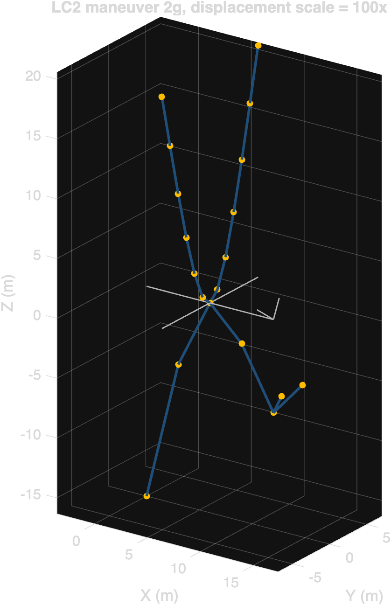
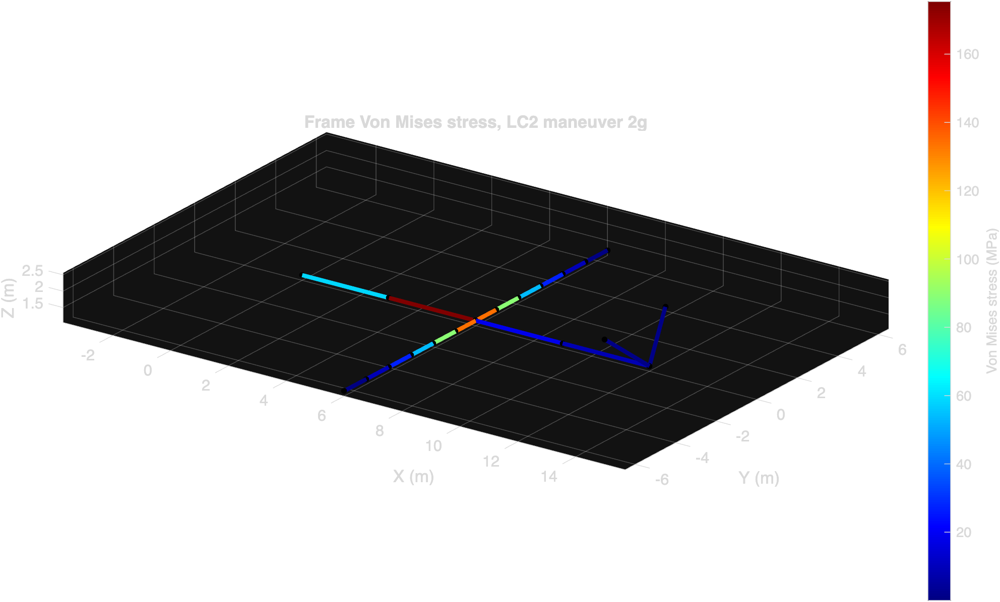
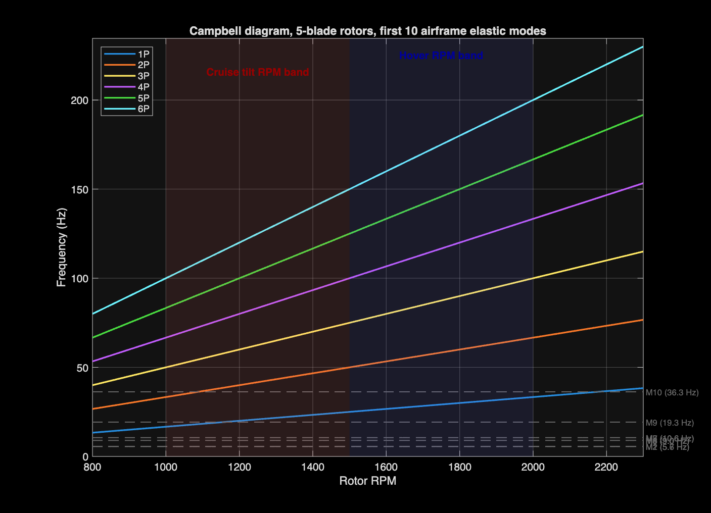
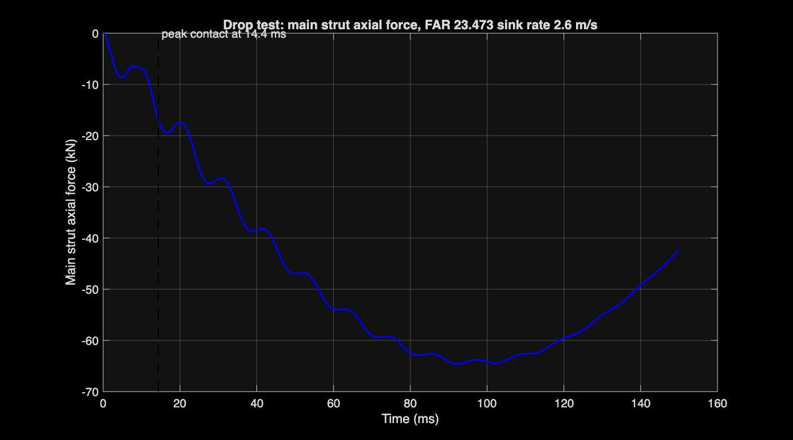
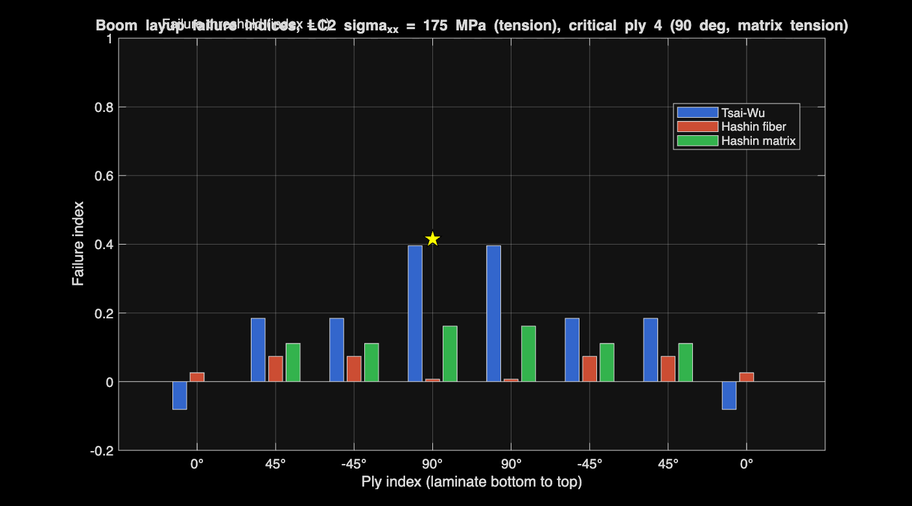
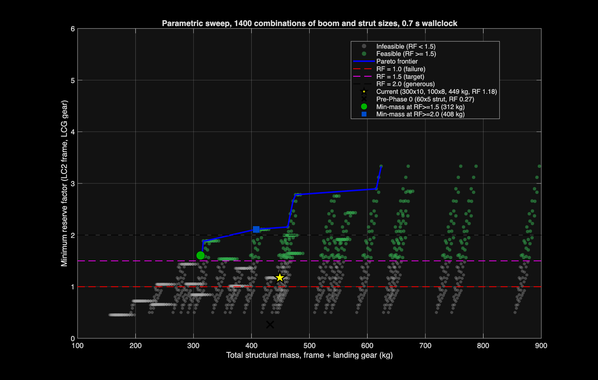

Archer Midnight Structural FEA
3D Euler-Bernoulli beam finite element analysis of an eVTOL airframe and tricycle landing gear, written from scratch in base MATLAB.

scripts/ansys_runner.py --all in 31 s.Approach
The toolkit assembles a sparse global stiffness matrix from 3D Euler-Bernoulli beam elements, applies four flight load cases (1g hover, 2g maneuver, cruise, motor-out) on the composite airframe and a FAR 23.473 hard-landing on the tricycle gear, and reports stress, displacement, and reserve factors against published material allowables. The implementation is base MATLAB with no toolbox dependencies.
Five layered analyses sit on top of the static solver. A consistent-mass modal analysis identifies the airframe natural frequencies and flags resonance against the rotor 1P, 2P, and blade-pass harmonics in the hover and cruise RPM bands. A Newmark beta time integration with a penalty-spring tire contact reveals the real peak landing force and the cabin-level acceleration. A classical lamination theory pipeline distributes the LC2 boom stress through a [0/45/-45/90]_s quasi-isotropic layup and computes Tsai-Wu and Hashin failure indices per ply. A 1400-point parametric sweep maps the mass-versus-RF Pareto frontier across boom and strut section sizes. Finally, the model is exported as Nastran .bdf and Ansys .mac for cross-verification, and two shell submodels are staged in Ansys APDL for the wing-fuselage joint and the strut top.
Results highlights





What I would do next
- Run the staged Ansys cross-verification. The toolkit emits Nastran .bdf and Ansys .mac files of the LC2 frame plus shell submodels of the wing-fuselage joint and the strut top. The expectation is peak von Mises agreement within 10 percent and peak displacement within 5 percent.
- Add a nonlinear oleo strut model to the drop test. The current 1.87 dynamic factor uses a rigid strut with tire compliance only. A real Midnight has an oleo that absorbs landing energy over 100 to 200 mm of stroke, which would substantially lower the peak strut load and let the static design point shrink back toward 3g.
- Bridge the composite ply analysis through to a shell layup. The current cross-verification model uses isotropic-equivalent CFRP. A composite shell (Ansys ACP or Nastran PCOMP) with the actual [0/45/-45/90]_s stack would reveal interlaminar shear hotspots the beam plus isotropic shell cannot see.
- Loop the Phase 4 Pareto optimum back into the static and dynamic analyses. The 312 kg / RF 1.60 design uses very thin walls that the beam-element model treats as fine. A buckling check at this t/D ratio is the next gate before adopting the optimum, and that requires a shell or stiffened-panel model.
- Add an aerodynamic coupling. Spanwise lift is currently applied as resultant forces at the motor nodes. A vortex-lattice or low-order panel solution would distribute the lift more realistically and may shift the LC3 cruise governing locations.